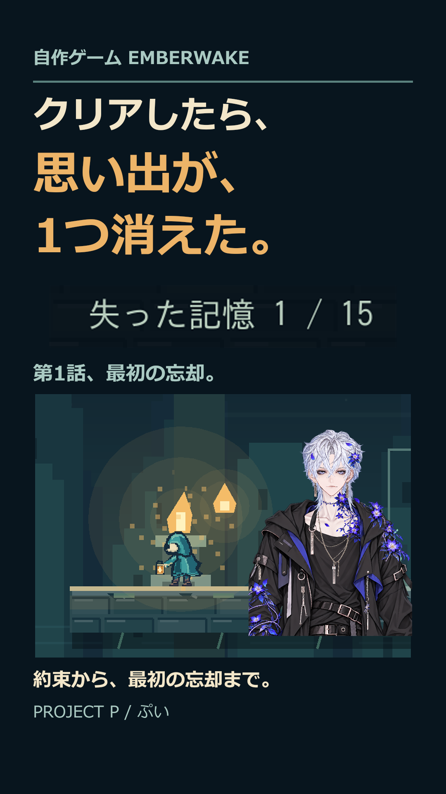

EMBERWAKE 第1話、最初の忘却。26.2秒。公開前制作原本・検品用。
「関連動画の本編へ」：実本編112。実native関連設定と公開はRootのreceiptで別確認。
末尾は「このゲームの続きを、フォローして見届けて。」。19:15は候補であり予約済みではありません。

実ゲーム0.12の自動入力収録を編集。VOICEVOX:青山龍星、Revenant_Natural、背景BGM Connecting Lights。RTA・人間の初見プレイ・実収録ゲーム音ではありません。直接全編試聴は未実施。